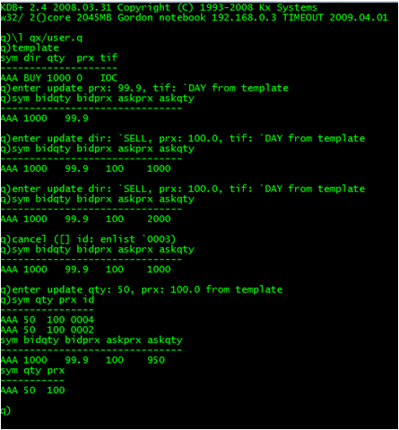
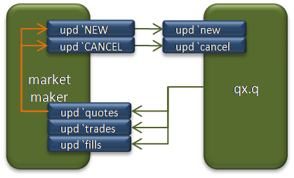

This series looks at building a near full-scale application in q and, in the process, tries to answer questions on the amount of code a q application requires, and how that code can be organised so that it is both comprehensible and straightforward to change. The target application is a participation strategy and some of its associated testing framework.
In this installment some tools are added for easier testing: direct trading on qx and a qx market maker. Previously in this series: the qx exchange. Next: a participation strategy specification.
user.q is an elementary script to connect to qx and allow you to enter and cancel orders from a q session. For example:

Note the use of a template table to make it easier to enter orders. user.q loads the template qx member implementation so that all quotes, trades and fills are shown on the console.
The code has caused a refactor in a couple of areas: the printif function used by qx is also needed here, so it has been separated to its own file and context, .util. Likewise, entering orders means they have to be uniquely identified, so a simple sequence numbering function and context has also been included, .seq.
Establishing and maintaining order books for testing is tedious, so marketmaker.q can do that for us. This market maker is elementary: it posts limit orders to maintain the best bid and ask for nominated symbols at a defined size. There is no adjustment in price for inventory.
The organisation of marketmaker.q is similar to qx. The market maker has tables keep the orders sent to qx, and the quotes received from qx. These similarities with qx lead to a refactor: the common definitions of orders and quotes are kept in a separate script, then these are copied to become the required table. Deleting all rows from a table will keep the column definitions so, to copy the definitions of quotes and orders into the market maker:
quotes: delete from .schema.quotes; orders: select by id from delete from .schema.orders;
Notice that the definition for orders is changed so that the market maker can keep orders keyed on the unique order id - and therefore facilitate upserts. A further table, control, holds the specified symbols for market making, along with the required sizes and spreads. This table is initialised when the script runs by upserting a parsed csv file.
The market maker follows the upd pattern: it needs the quotes, trades and fills from qx and adds to these various .process.upd dictionary entries for the different quote conditions it sees - low bid, zero ask etc. The market maker acts on feedback from quotes only: fills are used to maintian the open order table, trades are used to update the reference price for each symbol. Quote feedback needs to be dampened. The market maker reacts to quotes by sending orders, which cause more quotes: but other members may be updating the order book simultaneously, creating further quotes. Issuing more orders to compensate for zero bids or asks is suppressed by the market maker if it already has orders on that side (they just have not been reflected in the quote yet). Note that feedback has not yet been suppressed for low bids or asks - the market maker commits more capital than necessary - but the market maker serves its current purpose.

You will need all the downloads from the previous article as well as the following:
The .util context. | util.q | |
The shared schema, in the .schema context. | schema.q | |
The .seq context. | seq.q | |
| The qx user script. | user.q | |
| The market maker. | marketmaker.q | |
| The market maker control table. | marketmaker.csv |
The development of the market maker highlighted a problem: the upd function has a table argument but that may be a either unkeyed or keyed. qx published a keyed quotes table: trying to access x [`sym] will not work inside the callback function and would have to be replaced by:
exec sym from x
The policy adopted from this point on was to ensure that all tables published outside of the process are always unkeyed. It is the callback .process.upd function which decides if it is best to key the input table.
The qx quote processing has been refactored to make extensive use of upserts and so allow updates on many rows at a time. Note that the upsert does not need to update all the columns of the table.
When developing in q, the built-in http server is your friend. All atoms, lists, dictionaries and tables in the root context are visible through the browser. That also includes function dictionaries mentioned in the previous article and these just add confusion: a refactor of qx puts all the function dictionaries into the .qx context.
The code written so far includes a test market, a market maker and some other utility scripts. Common code has been refactored into specific q contexts (namespaces) to improve understanding and provide some degree of encapsulation. Below is a breakdown of the number lines of code, ignoring blank lines and comments.
| Lines of code | ||
|---|---|---|
qx.q | 103 | |
marketmaker.q | 72 | |
schema.q | 18 | |
user.q | 12 | |
seq.q | 9 | |
member.q | 4 | |
util.q | 3 | |
process.q | 2 | |
| 223 |
| 1. | www.kx.com | |
| 2. | Further updates, and more q code, can be found at code.kx.com. This is a secure site: for browsing the user name is anonymous with password anonymous. |